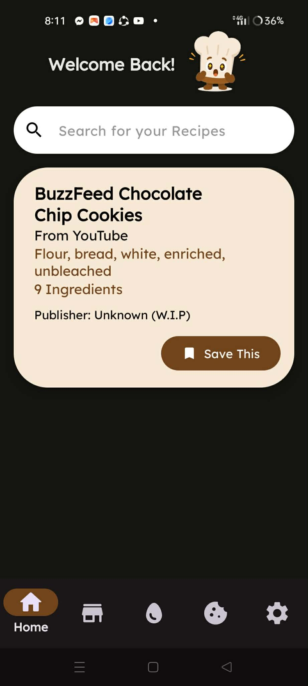
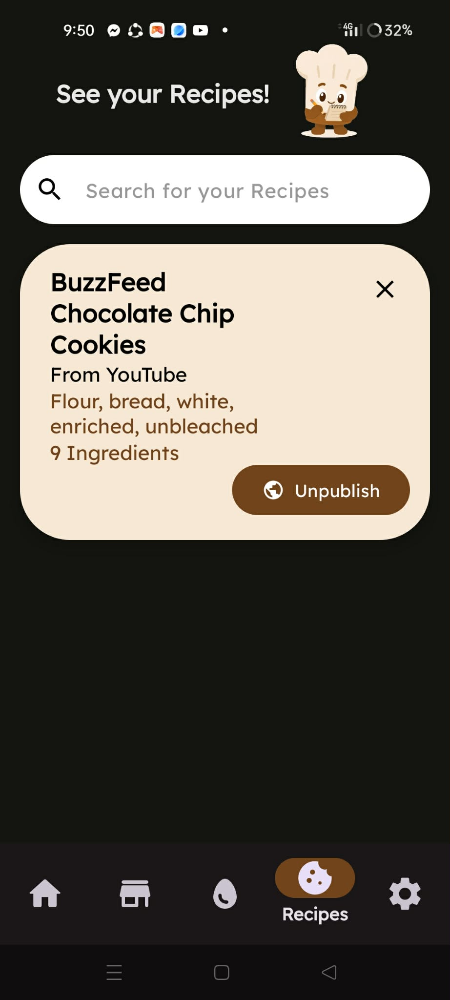
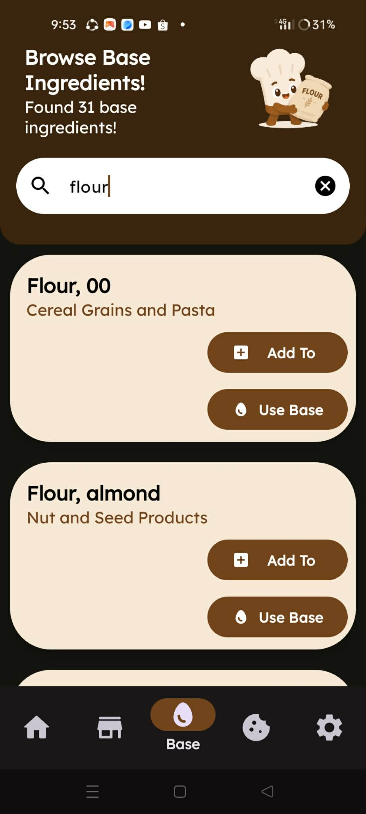
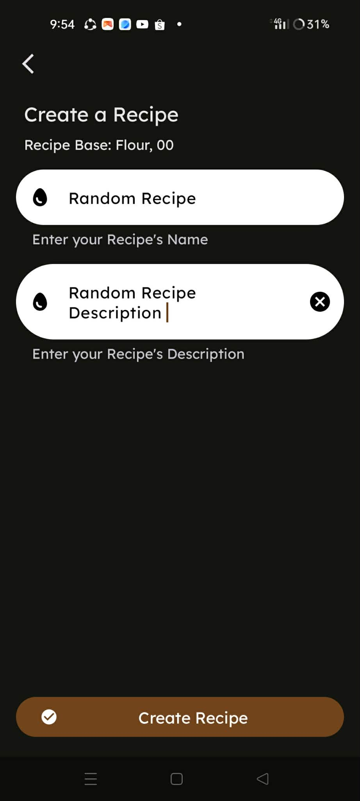
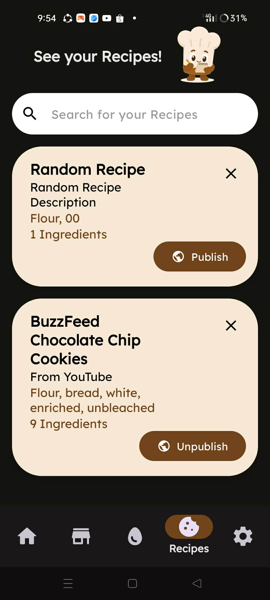
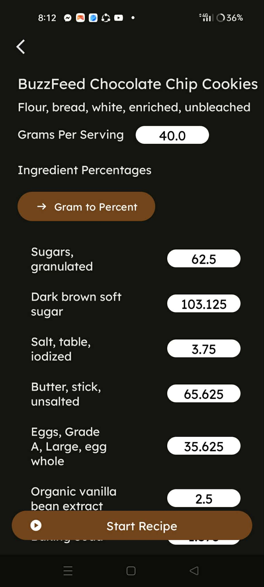
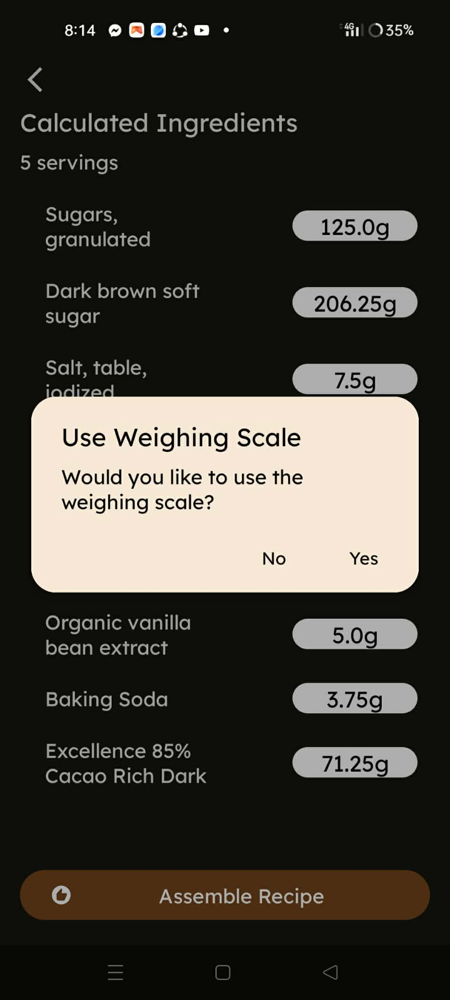

Gramly helps bakers measure ingredients accurately
and create more consistent recipes. Here’s how to get started:
1. Choose/Create a Recipe:


Save a recipe you want to prepare.



Or create a new entire recipe.
2. Measure Ingredients:


Use weight-based measurements to accurately measure
each ingredient according to the recipe.
3. Follow the Recipe:
Use the measured ingredients and follow each step
to maintain consistency throughout the baking process.
4. Bake with Confidence:
Accurate measurements help reduce inconsistencies
and achieve reliable results with every bake.
Gramly can be used as a learning tool to help students
understand accurate ingredient measurement and recipe consistency.
1. Practice Measuring:
Learn how different ingredients can vary when measured
by volume and weight.
2. Create Recipes:
Practice building recipes using precise ingredient weights.
3. Improve Consistency:
Compare measurements and learn how precision
can improve baking results.